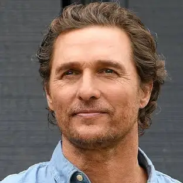

Uma Homenagem a um dos melhores filmes de ficção científica da Historia do Cinema
Sinopse
As reservas naturais da Terra estão chegando ao fim e um grupo de astronautas recebe a missão de verificar possíveis planetas para receberem a população mundial, possibilitando a continuação da espécie. Cooper é chamado para liderar o grupo e aceita a missão sabendo que pode nunca mais ver os filhos. Ao lado de Brand, Jenkins e Doyle, ele seguirá em busca de um novo lar.
Dados sobre o Filme
Data de lançamento: 6 de novembro de 2014
Diretor: Christopher Nolan
Indicações: Indicações a prêmios
Orçamento: 165 milhões USD (2013)
Bilheteria: 701,7 milhões USD
Companhia(s) produtora(s): Legendary Pictures; Syncopy Films; Lynda Obst Productions
trailer oficial:
Elenco
Matthew McConaughey
(Cooper)
Jessica Chastain
(Murphy cooper)

10 Fatos Curiosos Sobre o Filme
10 – Direção
A primeira opção para dirigir o filme era Steven Spielberg, que acabou recusando e indicando Jonathan Nolan. Já Jonathan preferiu passar para seu irmão, Christopher Nolan, que acabou sendo o diretor da produção.
9 – Custo
O custo do filme foi de 165 milhões de dólares no total, cerca de 976,3 mil dólares por minuto, já que a produção tem 169 minutos. Mas, em compensação, a arrecadação do filme foi de cerca de 675 milhões de dólares.
8 – Visitas à Nasa
Nolan fez visitas à Nasa e à Space X, para interagir com os profissionais e ter uma compreensão dos aspectos técnicos e científicos da exploração espacial.
7 – Regras
A produção tinha regras de não violar as leis físicas estabelecidas e todas as teorias deveriam ter paralelo com a ciência, sem ser inventadas.
6 – Consultoria Nobel
Kip Thorne, um renomado físico norte-americano e vencedor do prêmio nobel de fisíca, participou do longa como consultor técnico científico. A colaboração de Thorne deixou a obra autêntica e com uma camada de credibilidade sobre questões da física.
5 – Robôs
Grande parte das cenas de TARS e CASE não foram feitas em computadores. Eles eram controlados e dublados por pessoas reais, que depois eram removidos digitalmente.
4 – Milharal
As cenas do milharal foram feitas em um milharal real! Christopher Nolan, o diretor do filme, cultivou 200 hectares de milho para não precisar usar CGI. Depois, o milharal foi vendido.
3 – Naves
As naves usadas no filme, Endurance, Lander e Ranger foram todas filmadas com o uso de miniaturas e modelos em escala. Segundo o diretor, isso daria veracidade para as máquinas.
2 – Hipotermia
Anne Hathaway quase sofreu uma hipotermia nas filmagens do filme. Os atores precisaram gravar cenas na Islândia para as cenas do planeta de gelo, mas a roupa de astronauta da atriz não era bem vedada.
1 – Câmera
O diretor de fotografia, Hoyte Van Hoytema, modificou uma câmera IMAX, tornando-a portátil para capturar cenas interiores.